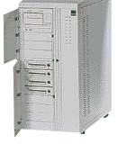

| ¬ системному блоцi знаходитьс€ основнi електроннi компоненти компьютера. |  |
—клад системного блоку:
Х блок
живленн€
Х системна
плата
Х приводи
накопичувачiв (дисководи) зi змiнним або незмiнним накопичувачем.
|
|
|
|
desktop, small-footprint, slimline, (ultra) superslimline |
mini-tower, midi-tower, big-tower |
” настольних корпусiв
системна плата розмiщена горизонтально, у башт Ч вертикально.
«зовнi на корпусi розмiщено:
Х кнопки
Power, Reset, Turbo
Х iндикатори
Power, HDD, Turbo
Х цифровий
дисплей (iндикатор тактовоi частоти).